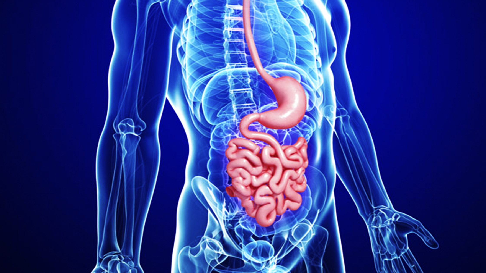

ENT OTORHINOLARYNGOLOGY الأنف والأذن والحنجرة
Cardiology – طب وجراحة القلب
STEM CELL THERAPY – العلاج بالخلايا الجذعية
UROLOGY – جراحة المسالك البولية
Neurology – طب وجراحة الأعصاب

PAEDIATRICS
SPINE – العمود الفقري

TRANSPLANT – زراعة الأعضاء
Orthopaedics – جراحة العظام
AESTHETIC MEDICINE
Eye/Ophthalmology – طب وجراحة العيون
BARIATRIC SURGERY – جراحة السمنة
REHABILITATION – العلاج الطبيعي
GASTROENTEROLOGY AND HEPATOLOGY

PAEDIATRIC SURGERY

MEDICAL GENETICS – علم الوراثة الطبية
VASCULAR – الأوعية الدموية
Wellness – اللياقة
FERTILITY AND IVF – الخصوبة وأطفال الأنابيب
GENERAL SURGERY & LAPROSCOPIC SURGERY – الجراحة العامة وجراحة المناظير
CHECK UP – الفحص الشامل

ALLERGY/IMMUNOLOGY الحساسية / علم المناعة
PREVENTIVE – الطب الوقائي
PAEDIATRIC PSYCHOLOGY علم النفس للأطفال
PAIN MANAGEMENT التحكم بالألم
Gamma Knife Surgery جراحة سكين غاما
PALLIATIVE CARE الرعاية التلطيفية
PSYCHOLOGY الطب النفسي
RADIOLOGY- DIAGNOSTIC TESTS AND PROCEDURES الأشعة وإجراءات التشخيص
RESPIRATORY MEDICINE – طب العلاج التنفسي
RHEUMATOLOGY الروماتيزم
Insulin Pump Therapy – العلاج بمضخة الانسولين
ANDROLOGY الذكورة
DERMATOLOGY الجلدية
WOUND CARE AND HYPERBARIC MEDICINE العناية بالجروج وطب ارتفاع الضغط
ENDOCRINOLOGY الغدد
NUCLEAR MEDICINE الطب النووي
Nephrology – طب الكلى
Cancer / Oncology – علم الدم والأورام
Dental – طب وجراحة الأسنان
Gynaecology – طب النساء
Cosmetic and Plastic – الجراحة التجميلية